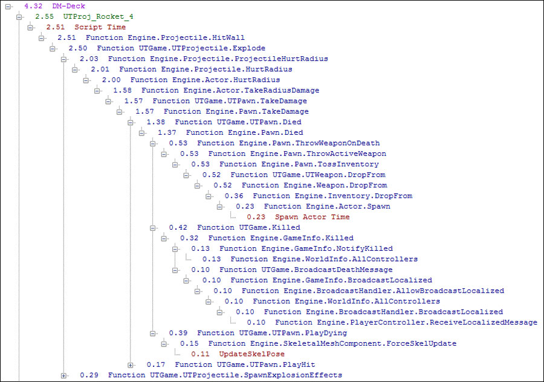
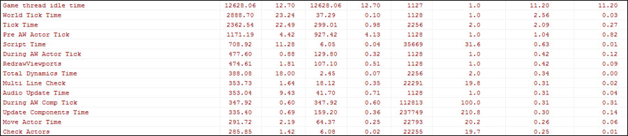
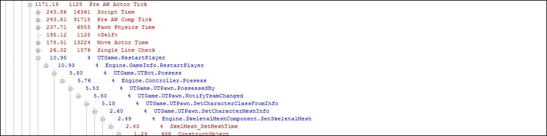

UDN
Search public documentation:
GameplayPerformanceOptimization
日本語訳
中国翻译
한국어
Interested in the Unreal Engine?
Visit the Unreal Technology site.
Looking for jobs and company info?
Check out the Epic games site.
Questions about support via UDN?
Contact the UDN Staff
中国翻译
한국어
Interested in the Unreal Engine?
Visit the Unreal Technology site.
Looking for jobs and company info?
Check out the Epic games site.
Questions about support via UDN?
Contact the UDN Staff
UE3 Home > Performance, Profiling, & Optimization > Performance Optimization For Gameplay Programmers
UE3 Home > Gameplay Programming > Performance Optimization For Gameplay Programmers
UE3 Home > Gameplay Programming > Performance Optimization For Gameplay Programmers
Performance Optimization For Gameplay Programmers
Overview
Broad Performance Investigation
STAT UNIT on to see if game, render, or GPU are slow. This should be run on a Test build if possible. GPU time may not be available, but can be assumed to be equal to total frame time time if it is greater than the other 2. It can be very helpful to have a QA team create a report and distribute it to relevant parties. Some useful information that should be included in the report would be:
- Average FPS - The raw average fps, sometimes excluding cinematics and noninteractive sections. The raw number here is less important as long as you are above vsync (30 usually), but is useful for tracking trending.
- % over 30 - How much of the time it is over 30fps. This should be as high as possible, with a goal of 95% or greater generally
- Total Hitches - Number of frames that take longer than 100 ms. These should be as low as possible.
- % Bound by Game and Render - How many of the slow frames are caused by the Game or Render thread. If these numbers are non-0 you should investigate what is causing it. % bound by GPU is not normally available, but if the other 2 bound by % numbers are low but % over 30 is also low, high GPU times are a likely cause.
Game and Render Performance
.gprof files for the Gameplay Profiler and .ustats files for the Stat Viewer. You can then open them up in the appropriate tool (double click usually works, may need to associate it).
Game Thread Profiling
Once you have a.gprof file open you can start looking for issues using the Gameplay Profiler. One approach is to drill down into individually slow frames on the graph above. Click on a slow frame, and check out the Frame Actor / Class Call Graph tab and Frame Function * tabs. Red text is STAT information, and green text is script calls and tick time.

Using those tabs you should be able to identify if a specific function call is slow, or an actor or class of actors are slow to tick. If it doesn’t look like an actor tick or script function are slow, use the Frame Function Summary tab to see what Stat call is taking all of the time, and the frame function call graph to see where that stat lives in the hierarchy. Once you identify the stat that is slow, you can search the source for the string mentioned, then find the stat and code using that stat. That may give you a hint, or you may need to ask for help from the engine team.
The other method of optimization is to try and holistically optimize functions that are slow throughout. To do that, the Aggr function summary and Aggr function call graph views are great.


You can select an individual stat or function and it will illustrate what frames that area is slow on in the graph above in red. It’s often useful to sort by Exclusive time here, as otherwise World Tick Time is generally the highest because it includes all other ticks. Once you see an area of interest you can click on one of the frames with a spike in that area and try to drill down to see what’s making that stat or function be slow that particular frame.
Render Thread Profiling
The Stats Viewer gives you similar information for the render thread, minus tick and script times. Once you open a.ustat you’ll be provided with a graph on the right and set of filters on the left. If you happen to suspect an individual stat you can select it to have it graph that stat, but it’s easier to start by drilling down into an individual frame. Right-click on a frame on the right, and select Open call graph. This drills down the specific frame and lets you look for slow elements, displayed in red. Once you see one you can add that to the general graph to see how frequent that stat is causing the game to be slow.
Common Performance Issues
- Platform specific issues - These usually manifest as large STAT times in game or render that do not have any more details available. This includes issues such as shader compiling, audio issues, memory stalls, etc. Once you identify which stat shows the slow time you’ll either need to use a platform-specific native profiler or discuss it with the engine team for additional help.
- Script call overhead - This shows up quickly in the gameplay profiler, and is generally easy to fix by adjusting gameplay logic or moving particularly slow functions to native.
- GC Time - GC Mark and GC Sweep often show up as large periodic stalls in the gameplay profiler/stat viewer. These are much, much larger if running in release mode without
-NoVerifyGC, so check that first. These are impossible to completely eliminate, but optimizing the number of GCable objects is the main goal. Moving more things to be in the startup package and decreasing object count are good goals. - Pathfinding and line checks - Pathfind calls and line checks are often slow on the game thread. The easiest way to optimize this is to do less work. Be on the look out for redundant path finds or line checks in gameplay code.
- DLE Tick time - Dynamic Light environment tick time is often very high in certain scenes. Make sure that only the objects that actually need them have DLEs, and to unset
bDynamicfor any actor-placed DLEs that do not need dynamic lighting. On mobile you may need more aggressive optimization, such as disabling the Dynamic Composite flag on lights you want for lightmass but do not want for dynamic objects. - Particle Time - Individual particle systems are often expensive to tick. You can find out the particle system from the Gameplay Profiler and ask the artist to optimize it. Or, you may need to change gameplay logic to spawn fewer of them, for instance if an attack kills 10 enemies you may want to only spawn the death particle on the first 2 enemies that die in a frame. Update Bounds time indicates a particle system needs a fixed bound, and DLE update time indicates it’s doing light updates that may not be necessary. This is very content and game specific. Take a look at the ParticleTickStats for more details. Also, too many particles may show up as Particle update time on the render thread, fixed by cutting the number of visible particles via LOD or culling.
- Death and explosions - Death and explosions are slow for a variety of reasons, usually doing component updates, particle spawning, and some logic or AI updates. You may be able to defer some of the elements to the next frame, or remove them altogether if lots of thing are dying at once.
- Component Update time - Specific components may take a long time to update, such as skeletal meshes. You’ll have to look at the type of component, and may be able to move them to a simpler component type (for instance, 100 static meshes with vertex animation are much cheaper than 100 skeletal meshes)
- Interp actor update time - Interp actors can be very expensive to update, both in DLE time and in movement time. One common fix is to have the level designer mark "don’t encroach" on non-gameplay objects, as that will stop slow collision checks.
- Transparency Drawing - Transparent objects can often be very slow on the render thread, especially particles. Have the artists make sure there are not many transparent objects drawing on top of each other, and to LOD out transparent objects aggressively.
- Too Much Stuff - Most generally, artists and lds like to put lots of stuff in the game. Generally having lots (>10) of enemies or huge numbers of meshes visible are going to be slow, and will require optimization on the content side.